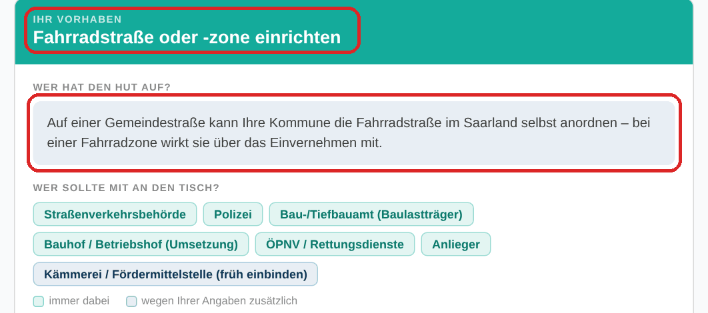
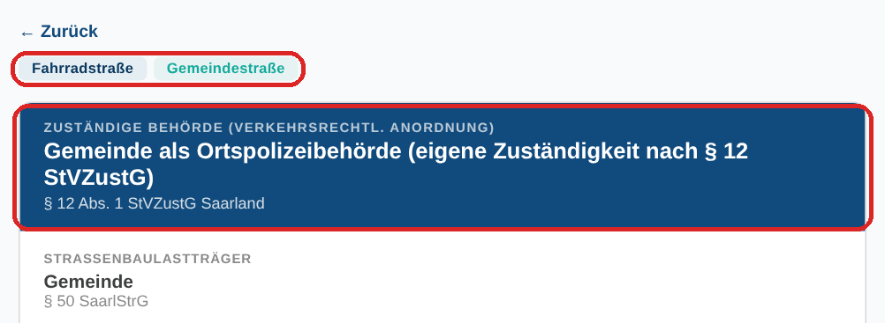
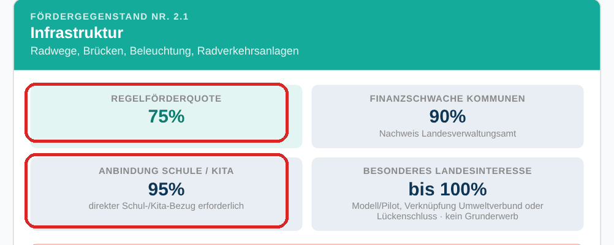
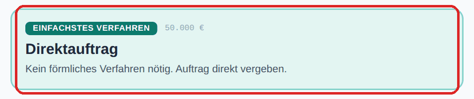

Ein Beispiel zum Mitklicken
Die Gemeinde möchte in der Schulstraße eine Fahrradstraße einrichten.
Wer darf das entscheiden, wer muss mitreden, gibt es Geld dafür, und wie wird der Auftrag vergeben? Vier Werkzeuge, vier Antworten – in dieser Reihenfolge.
1
Wer hat den Hut auf, wer muss mitreden?
Werkzeug: Projekt-Check
- Sie klicken
- Fahrradstraße einrichtenGemeindestraßeFördermittel geplant
- Antwort
- Die Gemeinde kann die Fahrradstraße selbst anordnen. Mit an den Tisch: Straßenverkehrsbehörde, Polizei, Bauamt, Bauhof, Anlieger – und früh die Kämmerei wegen der Förderung.

Selbst ausprobieren →2
Welche Behörde ordnet das an?
Werkzeug: Zuständigkeiten
- Sie klicken
- Beschilderung & AnordnungFahrradstraßeGemeindestraße
- Antwort
- Die Gemeinde selbst, als Ortspolizeibehörde. Sie trägt auch die Baulast. Dazu bekommen Sie die Rechtsgrundlage und Praxistipps, etwa dass die Fahrgasse mindestens 4 Meter breit sein muss.

Selbst ausprobieren →3
Gibt es Geld vom Land?
Werkzeug: Fördermittel-Finder
- Sie klicken
- Gemeinde / StadtInfrastruktur & BauNr. 2.1 Infrastruktur
- Antwort
- Ja: 75 % der Kosten, bei Schulbezug 95 %. Dazu Fristen, Mindestsumme und die Stelle, bei der Sie den Antrag stellen.
Wichtig: Erst den Antrag stellen, dann bauen oder beauftragen. Wer vorher anfängt, bekommt keine Förderung.

Selbst ausprobieren →4
Wie vergeben wir den Auftrag?
Werkzeug: Vergabe-Assistent
- Sie klicken
- Bau50.000 € netto
- Antwort
- Direktauftrag – kein förmliches Verfahren nötig. Das Werkzeug listet die drei Pflichtschritte zum Abhaken.
Bei geförderten Vorhaben können strengere Regeln gelten. Deshalb erst die Förderung klären, dann vergeben.

Selbst ausprobieren →Jedes Ergebnis lässt sich mit einem Klick als Text kopieren – für die E-Mail oder die Akte. Die Karte in den Werkzeugen ist freiwillig; alles geht auch ohne.
Alle Werkzeuge sind Orientierungshilfen. Sie ersetzen keine Rechts- oder Fachberatung im
Einzelfall und keine formelle Beteiligung der zuständigen Behörden. Die Bilder zeigen den
Stand der Werkzeuge vom Oktober 2026.